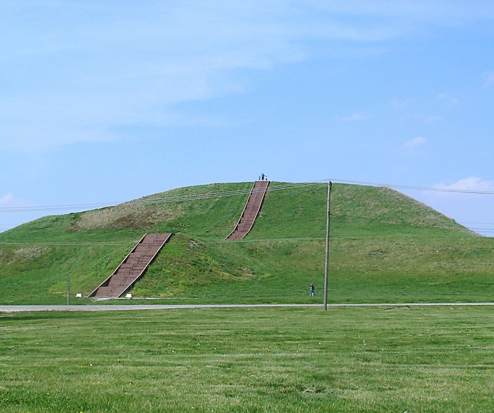
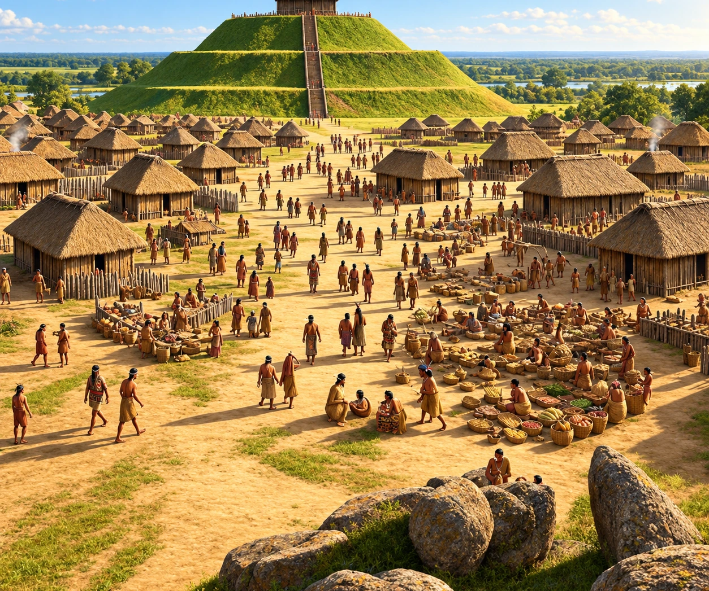
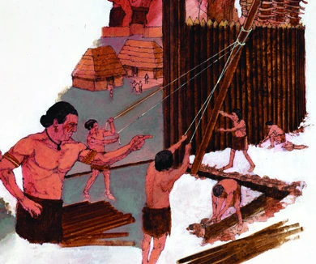
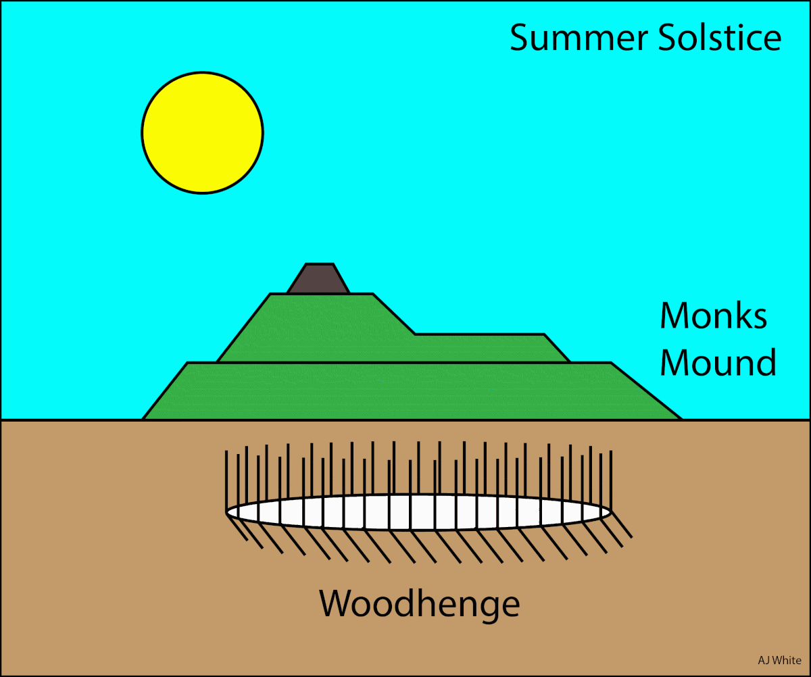

Cahokia
At its height around 1100 CE, Cahokia probably had about 10,000 to 20,000 people living in the central city.
A city before Columbus
About a thousand years ago, thousands of people lived in a carefully organized city just across the Mississippi River from present-day St. Louis. Cahokia had neighborhoods, plazas, walls, timber circles, workshops, and more than one hundred earthen mounds. At the center rose a structure unlike anything else north of Mexico: Monks Mound.


At its height around 1100 CE, Cahokia probably had about 10,000 to 20,000 people living in the central city.
At about the same time, London was in a similar population range and may even have been smaller than Cahokia.
Cahokia was not just a large Native town. It was one of the biggest urban places in North America and comparable in size to a famous world city.
Cahokia sat in a broad, fertile floodplain often called the American Bottom. The location connected rich farmland with one of North America’s greatest river systems.
Cahokia was more than a pile of mounds. Its layout reveals a large, organized community with spaces for everyday life, government, ceremony, defense, and public gatherings.

The city’s enormous central platform mound supported a large building on its summit.

A huge open space at the city’s center was used for gatherings, ceremonies, games, and other public activity.

A tall wooden palisade surrounded the central precinct. Its bastions suggest defense was at least part of its purpose.

Large rings of wooden posts marked important positions of the rising sun and helped track seasons and ceremonial dates.
Monks Mound is a four-terraced platform built from layers of earth carried and piled by people. It covers roughly 14 acres at its base and rises about 100 feet above the surrounding ground.
Its size is evidence of organization. Building and rebuilding a mound this large required planning, leadership, food supplies, and the coordinated labor of many people over time.

Cahokia’s residents left no written history that archaeologists can read today. Much of what we know comes from physical evidence. Click a type of evidence to see what it can reveal.
Dark stains where wooden posts once stood can reveal the outlines of houses, walls, and even huge timber circles such as Woodhenge.
Archaeology shows that Cahokia was impressive, but it also reveals a more disturbing side. At Mound 72, archaeologists uncovered more than 250 burials.
Some of those burials appear to be connected to human sacrifice. Archaeologists found groups of young women buried together, along with other individuals whose remains suggest ritual killing or harsh treatment. These discoveries suggest that powerful leaders and religious ceremonies were tied to sharp social differences—and sometimes violence.
That makes Cahokia more complicated—not less interesting. Historians have to tell the whole story, even when the evidence is uncomfortable.
Excavations at Mound 72 uncovered a wide range of burials—not just one grave. Some people seem to have been important leaders or elites, while others appear to have been sacrificed and buried in groups.
One especially famous burial included a high-status man laid on a bed of shell beads with carefully placed grave goods. Finds like this help show the power, wealth, and ceremony tied to Cahokia’s ruling class.
Cahokia’s population began shrinking after about 1200. By around 1400, the great urban center had been largely abandoned. Archaeologists still debate why.
Floods, drought, and changing growing conditions may have put pressure on a city that depended on large harvests.
The construction and rebuilding of defensive walls suggests periods of tension. Changes in leadership or internal conflict may also have mattered.
People may have left for smaller communities as political, economic, or social networks changed.

Why is “we do not know for certain” sometimes a stronger historical answer than choosing one simple cause?
The city was abandoned, but Native people in the region continued. Communities moved, reorganized, and maintained cultural traditions. Archaeologists now understand Mississippian peoples as ancestors and forebears of later Native nations—not as a mysterious “lost race” of mound builders.
The landscape itself also changed. Farming, roads, railroads, highways, and urban growth damaged or erased many mounds in the greater St. Louis–Cahokia region. Archaeologists sometimes had to work quickly to record sites before construction destroyed them.
Cahokia Mounds is protected as a state historic site and recognized by UNESCO as a World Heritage Site. Dozens of mounds remain, including Monks Mound, and archaeological research continues to change what we know about the city.